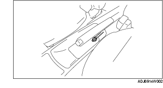

Parking brake lever adjustment
1. Remove the console cover.
2. Turn the adjusting nut as shown in the figure, and adjust the parking brake lever.

3. After adjustment, confirm the following points.
- • If there is any malfunction, inspect the parking brake lever again.
- (1) Pull the parking brake lever one notch and verify that the parking brake warning light illuminates.
- (2) Release the parking brake lever completely, and verify that the rear brakes do not drag.